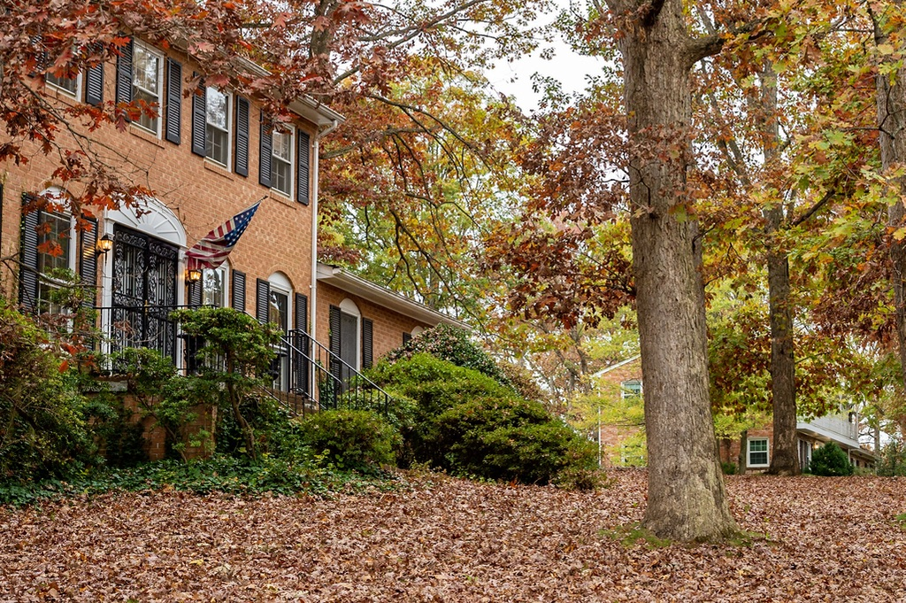

History of McLean Hamlet, McLean, Virginia 22102
By William Paul Rodgers, Jr.
“When I was at home I was in a better place”
— William Shakespeare, As You Like It, Act II, Scene 4, Line 16
McLean Hamlet is an idyllic neighborhood of 507 homes nestled between Lewinsville Road on the North, the Dulles Airport Access Road on the South, the Capital Beltway (I-495) on the East, and the Spring Hill Elementary School and the McLean Youth Soccer Field on the West.
The Hamlet began in August 1964 when several developers purchased 205 acres of dairy farm property from Thomas Gustavus Elgin, Sr. Ten different builders began the construction of 410 homes in Sections 1, 2, and 3 that covered the area from Elsinore Avenue to Spring Hill Elementary School. Each builder used a different architect, and the homes ranged from traditional to contemporary—some even with indoor swimming pools. The first houses were built on Lewinsville Road, including several model homes for inspection by prospective buyers. Construction continued along Titania Lane, and other developers soon began work on their sections.
House sales began in May 1965. Since most of the acreage was pasture, the builders planted more than 3,500 trees throughout the community and especially along the streets. The initial construction of the homes was completed in 1968, and further building in Sections 1-3 increased the number of homes to 422.
The developers and builders of Sections 1-3 included Alger Development Corp. (Alexander Feldman, President), Grove Brothers, Bill Julian, Lowstutter, Norbar Construction Co. (William J. Goldstein), Phoenix Properties, Inc., Raybar Construction Co. (Ellis Barron & Marshall Racoosin, Partners), Stony Elmore, Walter Reynolds, and Westwood.
A major developer and builder was Phoenix, headed by Sigmund Goldblatt, Harold Wolkind, Philip Heyman, Douglas Rosenbaum, and Gene Hooper. Phoenix has built hundreds of homes in the metropolitan area, including those in the Chain Bridge Forest, Lake Barcroft, and Mantua Hills subdivisions of Fairfax County, and has rehabilitated old homes in the Kalorama and Cathedral areas of the District. Raybar Construction Co. built 30 homes in Mantua Hills, and Alger built homes in Swinks Mill Estates.
In about 1967, Walter Reynolds, one of the largest builders in Northern Virginia, went bankrupt after building 50 homes in McLean Hamlet. The homes, which were largely completed, stood empty for several months and were eventually sold to pay off mechanics' liens and other indebtedness. Phoenix rescued the situation by repairing the damage caused by vandalism, completing the construction, and marketing the homes.
A story from the early days of the Hamlet tells of Ernest Greene, a retired Navy pilot, who built a full-size airplane in the garage of his home at 8103 Falstaff Road. He completed it in 1966 or 1967 and flew it from the Hamlet, using Falstaff Road as his runway! His son reportedly stood at the middle of Lewinsville Road at Falstaff and controlled the very limited vehicle traffic at that time. Greene flew to the north airport, over what was then open farmland—now the homes of Condon Manor and the Spring Hill District Park and Recreation Center.
Planes also figured in another part of our neighborhood. On Thursday, April 28, 1977, at about 8:38 PM, a corporate jet carrying two crew members and two executives of Southern Company Services, Inc. exploded over the McLean Hunt subdivision, creating a fireball that destroyed a home and two automobiles and damaged other property at the intersection of Foxhound and Old Stable Roads. Debris from the explosion was scattered across the Hamlet. While the four persons on the jet died, there were no injuries on the ground. The aircraft had departed Washington National Airport four minutes earlier and was en route to Birmingham, Alabama. A few seconds later, the explosion would have occurred over the Hamlet because the projected route showed entry over 7817 Lewinsville Road, crossing Birnam Wood Drive, Capulet Court, Horatio Street, Ariel Way, Portia Place, and exiting over 7819 Falstaff Road. The cause of the accident remains undetermined.
Alger also constructed, in 1971-1972, the 61 homes in Section 4 of the Hamlet that covered the area between Elsinore Avenue and Snow Meadow Lane and Lear Road. The Norvail Development Corp. constructed, in 1979-1980, the 24 homes in Section 5 of the Hamlet on Snow Meadow Lane and Lear Road.
Membership in the MHCA is voluntary, unlike many similar organizations that have the authority to compel members to pay assessments. The MHCA depends on the goodwill of its members and the voluntary payment of modest dues for its support.
“Our street names ... and more.”
The Hamlet nomenclature is derived from William Shakespeare (1564-1616), the Bard of Avon, who wrote more than a million enduring words of lyric and dramatic literature and is considered the greatest playwright who ever lived. Twenty-three streets of the Hamlet are named for Shakespearean characters or places that appear in 16 of his 38 plays. Sigmund Goldblatt, one of the developers of Sections 1-3, named the Hamlet and the streets. He regarded the area as a hamlet in McLean, which led him to call it “McLean Hamlet” and assign the Shakespearean street names. The names are fitting for the neighborhood’s classic beauty of tree-lined streets, manicured lawns, and many brick colonials.
The Hamlet has its own Swim and Tennis Club (founded 1968) on land provided by Fairfax County, which is operated as a nonprofit organization by a board made up of residents. The club is the social center of the Hamlet. Many of the children in the neighborhood swim for the community’s team. The Fairfax County Park Authority operates McLean Hamlet Park and Falstaff Park (with playground equipment) within the Hamlet, in addition to the Spring Hill District Park and Recreation Center (1987) across Lewinsville Road.
The youth of the Hamlet attend Spring Hill Elementary School (1965), James Fenimore Cooper Middle School (1962), and Langley High School (1964). The high school is consistently ranked among the best in the nation.
Hamlet residents in 1967 began what is now known as the Festival of Lights. At dark on each Christmas Eve, residents arrange at curbside thousands of lighted candles in white bags that burn throughout the night in celebration of the holidays and neighborly friendship. The Festival has received regional recognition, and many visitors come from all over the area to see this magical display of illumination.
The opening of nearby Tysons Corner Shopping Center on July 25, 1968 introduced world-class shopping near the Hamlet. With the opening of Tysons II Galleria Mall on January 30, 1988, the area was soon transformed into one of the largest business districts in the nation, with a glittering array of upscale shops, restaurants, hotels, and major companies including Freddie Mac, Capital One, Hilton Hotels Global Headquarters, and USA Today. Construction is now underway to extend the Metrorail system from the West Falls Church Station to Dulles Airport, with four stations in the Tysons Corner area. The closest station, at Leesburg Pike (Route 7) and Spring Hill Road, will be about a mile from the west end of the Hamlet. Fortunately, the Hamlet is shielded from all this growth by the Dulles Airport Access Road, yet enjoys easy access to the many advantages and benefits of Tysons Corner.
1965—2019
The acreage sold by Thomas Elgin in 1964 for Sections 1-3 did not include the two acres now occupied by the homes at 7804, 7806, 7806A, and 7808 Birnam Wood Drive. The Boston family had owned this property for generations. Bernard Boston, his wife Peggy, and his parents occupied two homes on this site with access to Lewinsville Road as 7807 and 7809. Horses were stabled there, to the enjoyment of their new Hamlet neighbors. Bernard covered the White House as a photojournalist for The Washington Star and later for The Los Angeles Times. After the death of his parents, Bernard sold the property in 1993 to Chadsworth Homes, Inc. (Tom and Patrick Byrne) for the construction of these four homes. For traffic safety, access was switched from Lewinsville Road to Birnam Wood Drive. Bernard and Peggy Boston moved to Bryce, Virginia, and began publishing the Bryce Mountain Courier.

The McLean Hamlet Citizens, Inc. (MHCI) was established on June 8, 1967, with the adoption of articles of incorporation, constitution, and by-laws. Its organizational structure includes a president, vice president, secretary, treasurer, six directors, and committees to handle various aspects of Hamlet operations.
The basic mission of the MHCI is to preserve and enhance the value, desirability, and attractiveness of the Hamlet neighborhood. It enforces the restrictive covenants that govern the use and appearance of the residential properties. On August 1, 1973, the four members of the original architectural control committee, established by the developers of Sections 1-3, resigned and transferred the committee functions to the MHCI. In 2009, the organization was renamed the McLean Hamlet Community Association (MHCA) with the restatement and amendment of its articles of incorporation.
The MHCA monitors proposed development projects and zoning changes in the McLean area and works with other citizen associations to ensure that the interests of the Hamlet and neighboring subdivisions are not adversely impacted. It maintains close relationships with organizations such as the McLean Citizens Association (1914), covering the greater McLean area, and the Lewinsville Coalition (1997), whose members include the Hamlet as well as Bellmeade II, Cedars of McLean, Condon Manor, Foxhall of McLean, McLean Estates, McLean Hundred, McLean Hunt, McLean Hunt Estates, Spring Hill Road, Spring Meadows, Summerwood, Timberly South, and Woodside Estates.
The MHCA maintains the attractiveness of the ten entryway signs and shrubbery located at both ends of Falstaff Road, Titania Lane, Elsinore Avenue, and Snow Meadow Lane. Other significant accomplishments include the construction in 1984 of sound barriers between Hamlet homes and the Dulles Airport Access Road, and the installation in 1988 of colonial-style street lights instead of the originally planned austere parking-lot-type lights.
The Hamlet also has its own Garden Club (1969) and annually sponsors the yard sale (1980) and community picnic (1988). It issues a membership directory (1992), publishes the newsletter Hamlet Happenings (1970), and maintains a website (www.mcleanhamlet.org) and HamNet email message system (1997) to keep residents informed of local news.
New arrivals receive a warm welcome and an invitation to join the MHCA, along with information on schools, local government, voter registration, public utilities, and other items of interest, including the Hamlet’s organization, directory, and services.